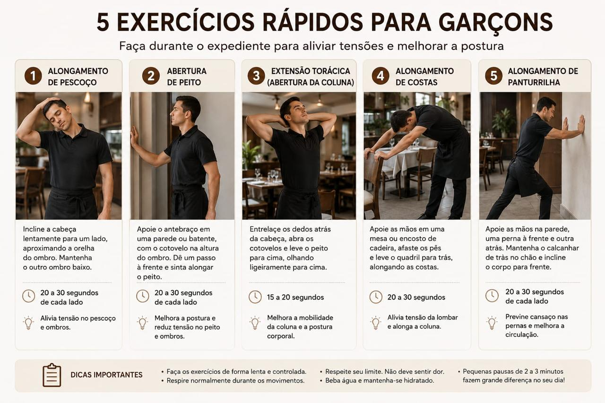

Projeto Jobson (Equipe KISHURDEV)
Plataforma desenvolvida durante estudos de Engenharia de Software, focada em estruturação de backlog e resolução de problemas práticos.
Ver projeto ➔Sou desenvolvedor Front-end e estudante de Desenvolvimento de Sistemas, Tecnico em Segurança do trabalho, auxiliar Administrativo e produtor musical. Tenho experiência na criação de interfaces responsivas e funcionais utilizando HTML, CSS, JavaScript e Bootstrap. Vamos conversar?
Confira alguns dos projetos que desenvolvi e que fazem parte da minha jornada como desenvolvedor.
Plataforma desenvolvida durante estudos de Engenharia de Software, focada em estruturação de backlog e resolução de problemas práticos.
Ver projeto ➔
Projeto de identidade visual e apresentação corporativa de um corretor postural voltado para profissionais de restaurantes.
Ver projeto ➔Essas são algumas das tecnologias que utilizo no meu dia a dia.